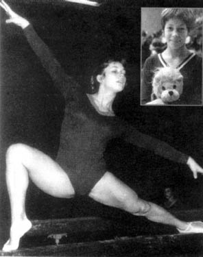

Krisztina Medvecky (HUN)
1972 Olympic Team Bronze Medalist

Medal Total
Olympic Games: 1 Bronze
Krisztina was born April 14, 1958, in Budapest. She began gymnastics in elementary school, and trained at Vasas Sport Club with coaches (and former Olympians) Olga Tass and Aniko Ducza. Medveczky was
the youngest participant (age 14) at the 1972 Munich Olympics, where she won a team bronze. She injured her knee before the Montreal Olympics, but still competed. After retiring, she worked as a coach at her old club
for many years. Her husband, a chemist and university professor, received a scholarship to study in London in 1986. The family (the couple have 3 daughters) then moved to Brisbane in 1988, where they still live.
Competition Results
1971
GEO-HUN Dual Meet: 2nd Team, 3rd AA
Hungarian Championships: 5th AA
Jr. Friendship Tournament (Druzhba): 3rd B, 4th V
1972
GEO-HUN Dual Meet: 2nd Team, 2nd AA, 1st UB, 1st B
HUN-USSR Dual Meet: 2nd Team, 6th AA
Hungarian Youth Championships: 1st AA
Jr. Friendship Tournament (Druzhba): 7th AA, 6th UB
Olympic Games: 3rd Team, 13th AA
1973
Chunichi Cup: 7th AA
European Championships: 10th AA
Hungarian Championships: 1st AA, 1st V, 1st UB, 1st B
Hungarian International: 1st AA, 1st V, 1st UB, 1st B, 1st FX
HUN-ROM Dual Meet: 2nd Team, 3rd AA
Riga International: 6th AA, 2nd UB, 2nd B
Tokyo Cup: 2nd AA
USA-HUN Dual Meet: 1st Team, 2nd AA
Vasas-Hamburg Dual Meet: 1st Team, 1st AA
1974
Antibes International: 3rd AA
FRG-HUN Dual Meet: 1st Team, 2nd AA
HUN-CAN Dual Meet: 1st Team, 2nd AA
HUN-ROM Dual Meet: 1st Team, 1st AA
Hungarian Championships: 1st AA, 1st FX
World Championships: 10th AA, 6th UB
1975
European Championships: 10th AA
GEO-HUN Dual Meet: 1st Team, 2nd AA, 1st B, 1st FX
Paris Grand Prix: 1st AA, 1st V, 1st UB, 1st FX
1976
Hungarian Championships: 6th AA
Olympic Games: 4th Team, 13th AA
This page was created on June 18, 2011 and was last updated on February 24, 2021.
© Gymn Forum